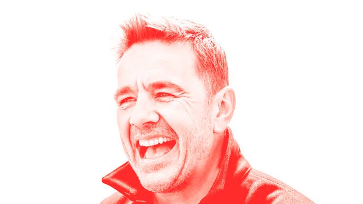

INTRODUCTION

Laurent Garnier, né le 1 er février 1966 à Boulogne-Billancourt (Hauts-de-Seine), est un DJ, compositeur et producteur français de musique électronique. Fondateur et directeur du label français F Communications, Il crée en 2013, aux côtés de Nicolas Galina et d'Arthur Durigon, le festival Yeah ! à Lourmarin dans le Luberon. Souvent assimilé au mouvement French touch puisqu'il s'est fait connaître du grand public à la même époque,Laurent Garnier se défend d'avoir contribué à l'émergence de cette scène qui n'est pour lui qu'une simple étiquette apposée sur les productions Disco/House filtrée françaises de la fin des années 90 ».
Chaque album a une histoire différente car ils correspondent à des périodes très différentes de ma vie.